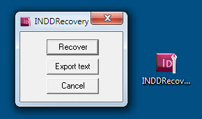
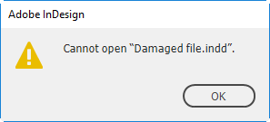
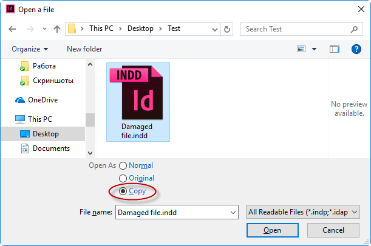

Damaged documents
Here are some tools for restoring corrupted InDesign documents:
Troubleshoot damaged InDesign documents (by Adobe)
INDDRecovery by Mikhail Kondakov
a program for restoring corrupted InDesign CS3 documents (for Windows only)

Blind open and IDML-export — script for trying to open a damaged InDesign document. Written by Martin Fisher; small edits by Kasyan.
You could try email your InDesign file to corrupt_indesign_docs@adobe.com and possibly they will take a look at the document. If the file is larger than 10 Mb, you can zip (and password protect) the file and upload to Creative Cloud account (or Dropbox) and send them a link to the document.
Markzware offers (paid) File Recovery Service.
Try to open in in the latest version: CC 2018.
Here is an awesome advice given by Aman (an Adobe employee) from the InDesign forum: instead of normal opening a damaged document -- which may result in the Cannot open SomeFileName.indd message

try to open it as copy.

If you don't believe that it works, try it yourself: here's the damaged file for testing.
Tips from Cari Jansen
Try this 1:
- Have you created a copy of the document and tried opening this?
- If you are opening the InDesign file from a Server or other Disk not on your local computer, try dragging the file to your computer and open it there.
- Have you tried resetting the InDesign preferences before launching the document?
- Have you tried clearing the font cache?
for Mac: Troubleshoot fonts in Adobe applications | Mac OS X
for Windows: How to reset Font settings in Windows 10 - Microsoft Community
Then try to relaunch the document.
Try this 2:
- Are you by any chance running font management that has a plug-in installed into InDesign
- If yes, then please uninstall the plug-in or disable font activation, before trying to reopen the corrupt InDesign document.
- If no, then please try and disable any fonts used in the document, you might need to temporarily remove them from your system.
Then try to relaunch the document.
Try this 3:
- Or are you running any other InDesign plug-ins/extensions?
- If yes, disable or uninstall all of these
Then try to relaunch the document.
See also: Cannot save “Untitled-1” under a new name. The file “Untitled-1” is damaged (Error code: 0) (on Windows only)